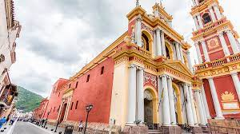
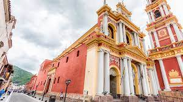

Arquitectura
El principal edificio civil en la ciudad de Salta es, sin dudas, el Cabildo. Tiene la importancia especial de ser el cabildo virreinal argentino que se ha mantenido y conservado en el mejor estado. La estructura general del edificio es la típica dos pisos de arquería con torre al centro. Detrás del volumen delantero de dos pisos de arcos se abren dos patios rodeados por galerías de arcos. Su expresión arquitectónica se caracteriza por la teja la baldosa cerámica, la madera de algarrobo en ménsulas y vigas. El estilo, los detalles y los materiales utilizados en el Cabildo, fueron modelo para las construcciones siguientes, como lo fueron la aparición temprana, siglo xvii, de muchas viviendas de calidad, rasgo particular de la Salta virreinal.


 
